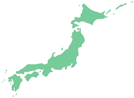

QUIZZICAL
1. What is the most famous Mexican beer?
Corona
Tuborg
Foster's
Kingfisher
2. The space between two eyebrows is ______
Bowman's capsule
Lacrimal
Glabella
Talcen
3.Who defeated the Ten kings in the battle of ten kings?
King Rajput
King Sudas
King Nabopolassar
Cyrus The Great
4.Which Indian state share the longest land border with Bhutan?
Assam
West Bengal
Sikkim
Maharashtra
5.Which among the following state produces maximum raw silk in India?
Bihar
West Bengal
Karnataka
Himachal Pradesh
6.Which among the following ports of India is also known as “child of partition”?
Kandla
Haldia
Kolkata
Paradip
7.What is the name of the Biggest Airborne Exercise recently conducted by the Indian Army?
Him Vijay
Dhruv Sakthi
Winged Raider
Yudh Abhiyas
8.What is the capital of Chile?
Santiago
Vatican
Ben Nevis
Uganda
9.Who was Henry VIIIs last wife?
Diana
Catherine Parr
Julia Gillard
Harriet Willow
10.Guess the country flag
Portugese
Indonesia
Spain
China
11.What are the five colours of the Olympic rings?
Blue, yellow, black, green and red
NavyBlue, yellow, black, red and green
Green, yellow, black, Pink and red
Yellow, Purple, black, green and red
12.Who won the FIFA Women's World Cup in 2019?
USA
Russia
Spain
New Zealand
13.Who was the only British Prime Minister to be assassinated?
Spencer Perceval
Boris Jhonson
Teresa May
Sir Harold Willson
14.Who is Donald Trump's vice president?
Mike Pence
Amelia
Thea
Phenelope Blossom
15.Which nuts are used in marzipan?
Almond
HazelNut
Cashew
Walnut
16.Which is the tallest statue in India?
Shiva of Murudeshwara
Spring Temple Buddha
Statue of Unity
Gandhi Statue
17.Which work of "Kuvempu" bought him "Gnanapeetha award"?
Nakutanti
Samagra Sahitya
Antarala
Ramayana Darshanam
18.Who played Queen Elizabeth II in the first two seasons of The Crown?
Claire Foy
Olivia Colman
Helena Bonham Carter
Charles Dance
19.Guess the lines from the TV series "Friends"
"Welcome to the real world..It sucks..You're gonna love it!"
Reese Witherson
Jane Sibett
Courteney Cox
Lisa Kudrow
20.Which avatar of Lord Vishnu is depicted in the picture below?
Kurma Avatar
Matsya Avatar
Kalki Avatar
Varaha Avatar
21.NR Narayana Murthy was the CEO of Infosys from _____ and chairman from _____.
1986 to 2004,2008 to 2011
1961 to 2002,1961 to 2002
1981 to 2004,2010 to 2015
1981 to 2002,2002 to 2011
22.God of basketball
Michael Jordan
Diego Maradona
Kobe Bryant
Oscar Robertson
23.The six main stars of Friends appeared in all 236 episodes. Who is the next most regular character to appear in the show?
Janice Hosenstein
Carol Willick
Judy Gellar
Gunther
24.A starts some business with Rs. 50,000. After 3 months B joins him with Rs. 70,000. At the end of the year. In what ratio should they share the profit?
1:3
3:2
1:5
None
25.What kind of mosquitos carry Malaria?
Culex Mosquito
Anopheles Mosquito
Mansonia Mosquito
Culiseta Mosquito
26.What is phycology?
Study of Mind and behaviour
Study of Brain
Study of Algae
All of the above
27.Which is the first Asian country to orbit Mars?
Vietnam
India
Belgium
Pakistan
28.Which country is the largest producer of Coffee?
Vietnam
Colombia
Coorg
Brazil
29.Which river crosses the equator twice?
Congo River
Zaire River
Congue River
Ganga River
30.Guess the breed of the dog
Maltese
Dobermann
Shih Tzu
Bichon Frise
31.Which of these beaches is not in Goa?
Anjuna
Baga
Kovalam
Calangute
32.The terms ’Bull and Bear’ is associated with ________
Stock market
Animal market
None of the above
All of the above
33.Who is the father of economics?
Adam Smith
Rakesh Jhunjhunwala
P.V Narasimha Rao
None
34.What is the common name of Sodium Carbonate?
Baking Soda
Washing Soda
Soda Lime
Soda Water
35.Which is the sacred book of Buddhists?
Avesta
Bhagavat Gita
Jaina Sutras
Tripitaka
36.Which is the smallest Ocean?
Pacific Ocean
Arctic Ocean
Indian Ocean
South Atlantic Ocean
37.Who discovered Protons?
J.J Thomson
Ernest Rutherford
James Chadwick
Watson Rutherford
38.Who discovered Neutrons?
J.J Thomson
Ernest Rutherford
James Chadwick
Watson Rutherford
39.What does ‘Xylem’ in plants do?
Transport food
Transport food and water
Transport minerals
Transport water
40.Guess the country

Indonesia
Japan
South Korea
Thailand
Score =